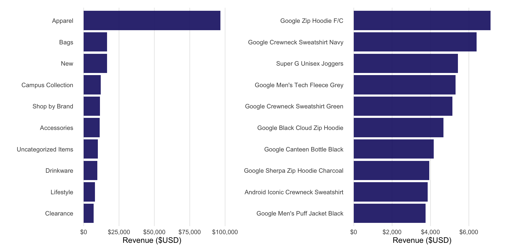
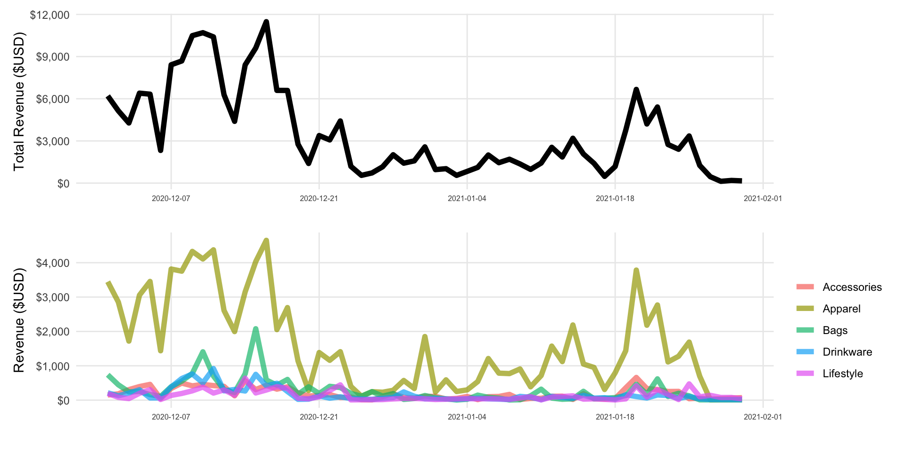
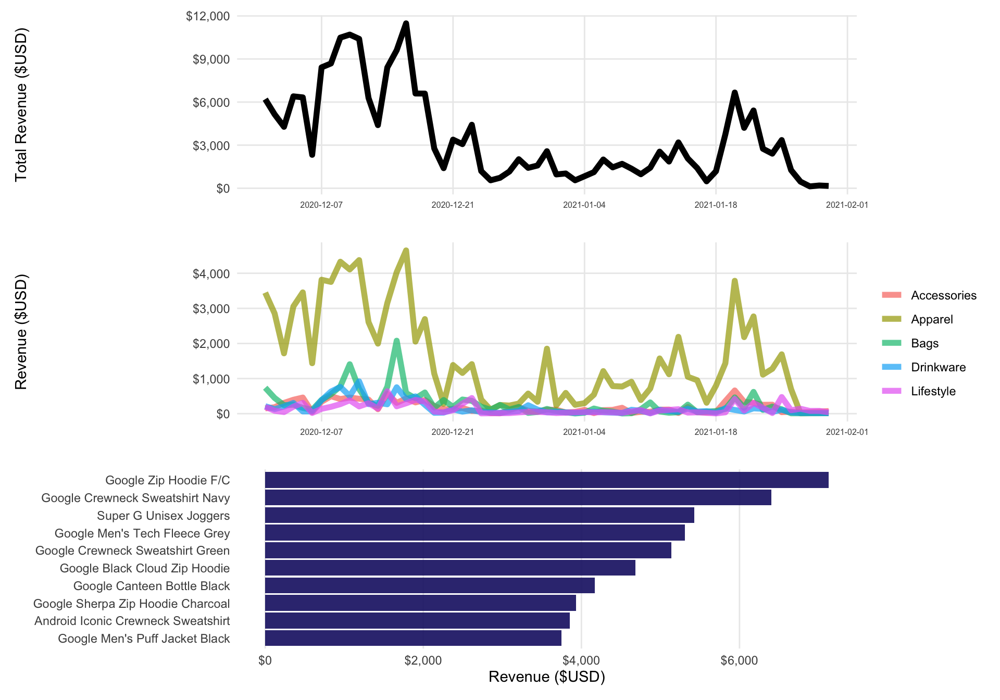
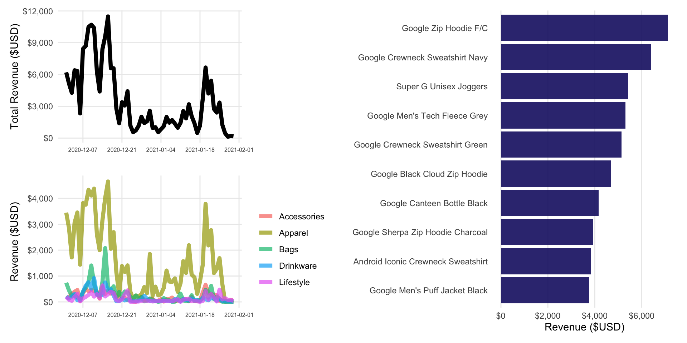
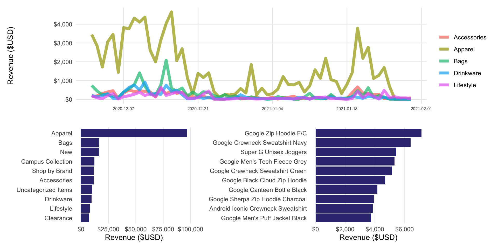
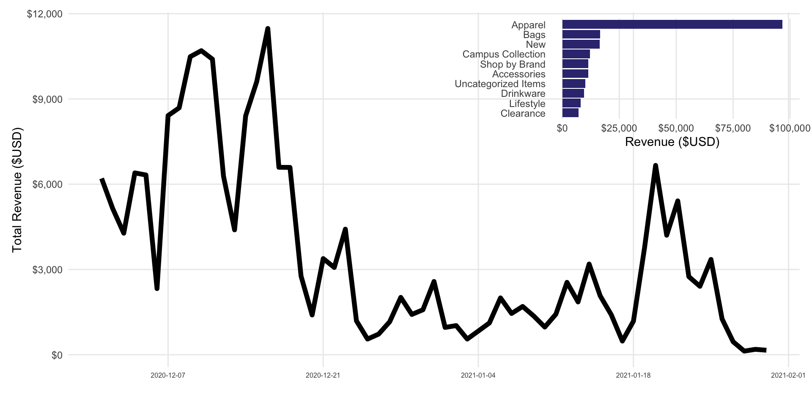
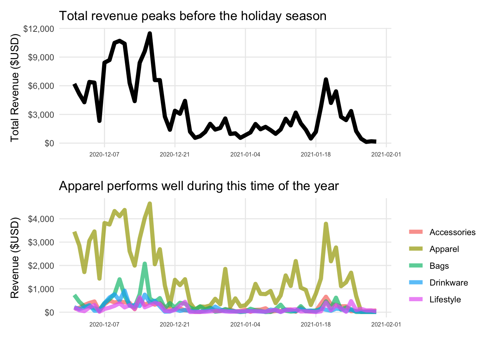
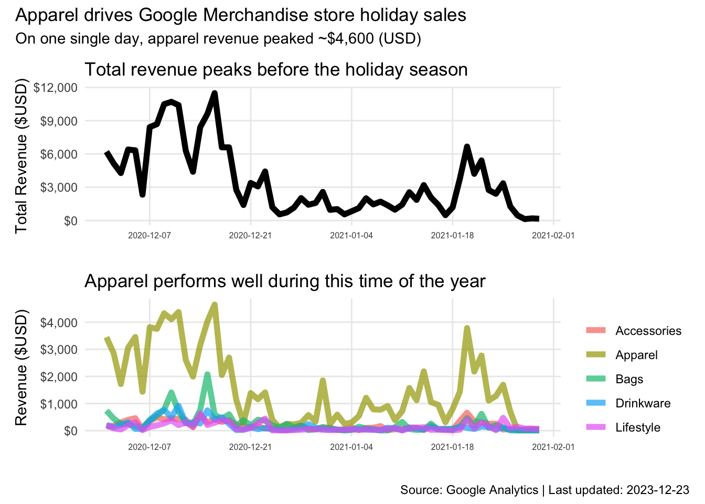
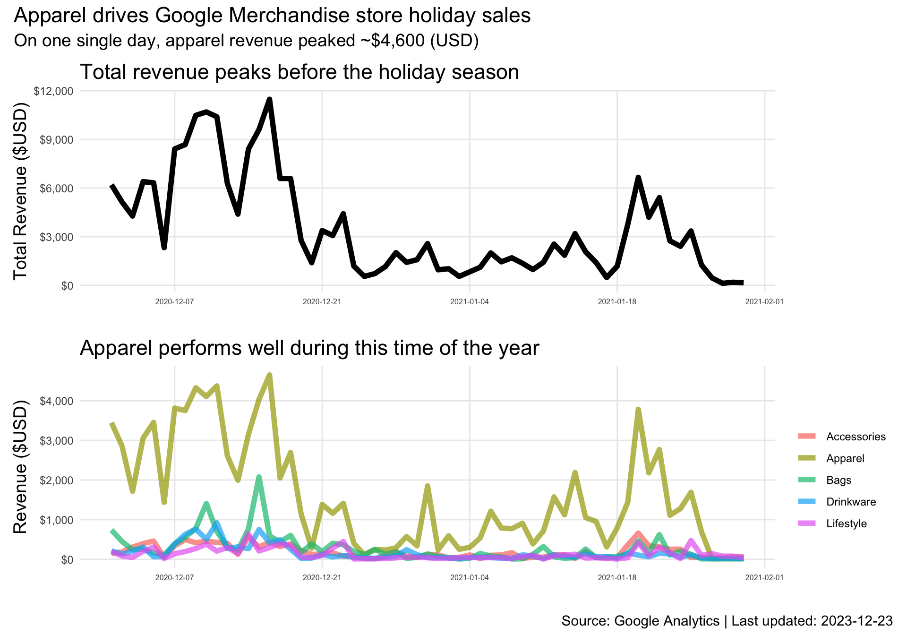
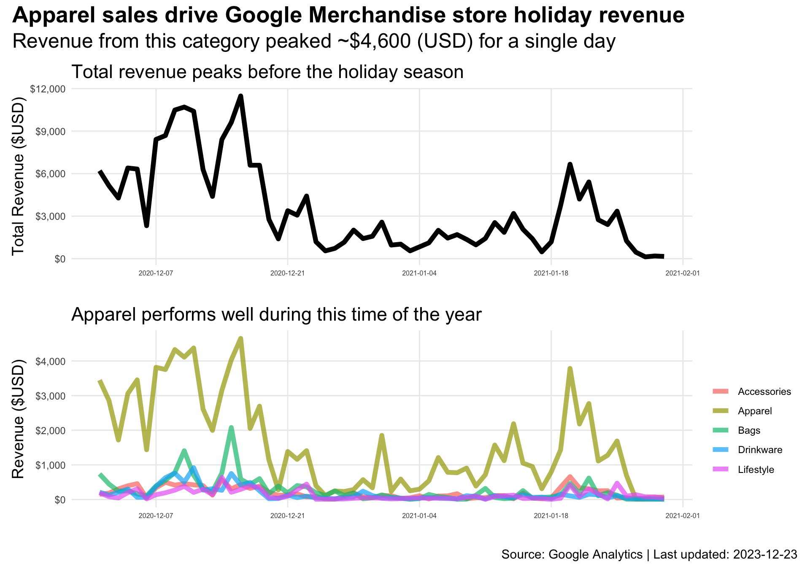

library(tidyverse)
library(patchwork)
library(bigrquery)
library(here)
library(glue)Combine plots using patchwork
data visualization
Need to add two or more plots together? Use the
patchwork package
Today I learned the patchwork package makes it easy to combine multiple plots into a single plot. In this post, I overview what I’ve recently learned from using patchwork’s functions to create plot compositions.
Setup libraries
Let’s bring in the libraries we’ll need to get started.
Some example plots
Before demonstrating some uses of the patchwork package, we’ll need to create some example plots. To do this, I’ll use example ecommerce data from the Google Merchandise Store. I’ve used this data in previous posts, so I’m going to spend little time describing this data in detail. If you’re interested in exploring this data further, check out the docs I linked earlier.
If you want to follow along, you can use the code below. This code queries the bigquery-public-data.ga4-data.ga4_obfuscated_sample_ecommerce public data set stored in BigQuery using the bigrquery package. Know that you’ll need to have a Google account to query this data, and depending on your setup (i.e., querying where billing is set up or if you’re using Google’s free credits), you may be charged to process your query.
# Query includes additional columns not used in this post
# but were included for other posts that use this data
query_purchases <- "
select
event_date,
ecommerce.purchase_revenue_in_usd,
ecommerce.transaction_id,
item_name,
item_category,
price_in_usd,
quantity,
item_revenue_in_usd,
(select value.string_value from unnest(event_params) where key = 'shipping_tier') as shipping_tier,
(select value.string_value from unnest(event_params) where key = 'payment_type') as payment_type,
device.category,
geo.country,
geo.region,
geo.city
from `bigquery-public-data.ga4_obfuscated_sample_ecommerce.events_*`,
unnest(items)
where event_name = 'purchase' and
ecommerce.transaction_id != '(not set)' and
_table_suffix between '20201201' and '20210131'
order by event_date, ecommerce.transaction_id
"# Make sure to modify with your bq project name
data_google_merch <-
bq_project_query("bigquery-project-name", query_purchases) |>
bq_table_download()write_csv(data_google_merch, here("2023-12-23-til-patchwork-ggplot2-combine-plots/data_google_merch.csv"))data_google_merch <-
read_csv(here("til/posts/2023-12-23-til-patchwork-ggplot2-combine-plots/data_google_merch.csv")) |>
mutate(event_date = ymd(event_date))Rows: 9365 Columns: 14
── Column specification ────────────────────────────────────────────────────────────────────────────
Delimiter: ","
chr (8): item_name, item_category, shipping_tier, payment_type, category, country, region, city
dbl (6): event_date, purchase_revenue_in_usd, transaction_id, price_in_usd, quantity, item_reven...
ℹ Use `spec()` to retrieve the full column specification for this data.
ℹ Specify the column types or set `show_col_types = FALSE` to quiet this message.Although I’m not going to spend much time describing this data, let’s use dplyr’s glimpse() to get an idea of what variables this data contains.
glimpse(data_google_merch)Rows: 9,365
Columns: 14
$ event_date <date> 2020-12-01, 2020-12-01, 2020-12-01, 2020-12-01, 2020-12-01, 2020-…
$ purchase_revenue_in_usd <dbl> 40, 40, 40, 40, 40, 40, 40, 62, 62, 44, 28, 28, 36, 36, 36, 36, 92…
$ transaction_id <dbl> 10648, 10648, 10648, 10648, 10648, 10648, 10648, 171491, 171491, 1…
$ item_name <chr> "Google Hemp Tote", "Android SM S/F18 Sticker Sheet", "Android Buo…
$ item_category <chr> "Clearance", "Accessories", "Drinkware", "Small Goods", "Office", …
$ price_in_usd <dbl> 12, 2, 4, 2, 3, 3, 14, 48, 14, 44, 14, 14, 1, 4, 16, 7, 92, 7, 14,…
$ quantity <dbl> 1, 1, 1, 1, 1, 1, 1, 1, 1, 1, 1, 1, 1, 1, 1, 2, 1, 53, 1, 1, 1, 1,…
$ item_revenue_in_usd <dbl> 12, 2, 4, 2, 3, 3, 14, 48, 14, 44, 14, 14, 1, 4, 16, 14, 92, 371, …
$ shipping_tier <chr> "FedEx Ground", "FedEx Ground", "FedEx Ground", "FedEx Ground", "F…
$ payment_type <chr> "Pay with credit card", "Pay with credit card", "Pay with credit c…
$ category <chr> "mobile", "mobile", "mobile", "mobile", "mobile", "mobile", "mobil…
$ country <chr> "United States", "United States", "United States", "United States"…
$ region <chr> "California", "California", "California", "California", "Californi…
$ city <chr> "San Jose", "San Jose", "San Jose", "San Jose", "San Jose", "San J…A note about this data:
- For an unknown reason, I can’t figure out why the
purchase_revenue_in_usdcolumn doesn’t equal the sum ofitem_revenue_in_usdaggregated by thetransaction_idfor some transactions.
# Check out cases where things don't add up
non_equal_trans <- data_google_merch |>
group_by(transaction_id) |>
summarise(
purchase_revenue_in_usd = max(purchase_revenue_in_usd),
item_revenue_in_usd = sum(item_revenue_in_usd)
) |>
filter(purchase_revenue_in_usd != item_revenue_in_usd) |>
mutate(diff = purchase_revenue_in_usd - item_revenue_in_usd)|>
arrange(diff)
non_equal_trans# A tibble: 599 × 4
transaction_id purchase_revenue_in_usd item_revenue_in_usd diff
<dbl> <dbl> <dbl> <dbl>
1 129469 113 339 -226
2 698935 159 318 -159
3 43463 128 284 -156
4 940161 75 225 -150
5 378505 88 176 -88
6 145915 84 166 -82
7 22807 83 164 -81
8 797936 79 156 -77
9 594908 113 187 -74
10 589284 71 142 -71
# ℹ 589 more rowsThe data contains 599 transactions where the revenue doesn’t match. One transaction was even over reported by $226. The only conclusion I can come up with is either the merchandise store had some type of sales promotions not included in the analytics data. Nevertheless, I’ll create some example plots even though there is known discrepancies.
Create some example plots
Now that we have some data, let’s create some example plots. While you look over the code, note that each plot object is assigned a name. That is, the examples all use the <- to create stand alone plot objects. These named objects will be important, as we’ll use them with patchwork’s operators to create different plot compositions.
Show me the money
Let’s start with a pretty straight forward plot, total revenue over time. Here’s the code I used to wrangle the data and create the plot:
data_revenue_trend <- data_google_merch |>
group_by(event_date, transaction_id) |>
summarise(revenue = max(purchase_revenue_in_usd)) |>
summarise(revenue = sum(revenue))`summarise()` has grouped output by 'event_date'. You can override using the `.groups` argument.vis_rev_trend <- ggplot(
data_revenue_trend,
aes(x = event_date, y = revenue)
) +
geom_line(linewidth = 2) +
scale_x_date(date_breaks = "2 week", date_labels = "%Y-%m-%d") +
scale_y_continuous(labels = scales::dollar_format()) +
theme_minimal() +
theme(
panel.grid.minor = element_blank(),
axis.text.x = element_text(size = 6)
) +
labs(x = "", y = "Total Revenue ($USD)")Items generating the most revenue
The data is from an online store, so we should explore items generating the most revenue. To keep things simple, I use dplyr’s slice_max(10) to create a plot of the Top 10 revenue generating items. Because we’re slicing the data, other items are excluded from the plot. The following code wrangles the data and creates the plot for us.
data_items_rev <-
data_google_merch |>
group_by(item_name) |>
summarise(revenue = sum(item_revenue_in_usd)) |>
arrange(desc(revenue)) |>
slice_max(revenue, n = 10)vis_high_rev_items <- ggplot(
data_items_rev,
aes(
x = fct_reorder(item_name, revenue),
y = revenue)) +
geom_col(fill = "#191970", alpha = .9) +
scale_y_continuous(labels = scales::dollar_format()) +
coord_flip() +
theme_minimal() +
theme(
panel.grid.major.y = element_blank(),
panel.grid.minor.x = element_blank()
) +
labs(y = "Revenue ($USD)", x = "")Product categories generating most revenue
The data also categorizes items into more general groupings. As such, we can create a plot ranking product categories by amount of revenue generated. No question, it’s apparel. The code to create the plot is similar to what we did above with items.
data_cat_rev <-
data_google_merch |>
group_by(item_category) |>
summarise(revenue = sum(item_revenue_in_usd)) |>
arrange(desc(revenue)) |>
slice_max(revenue, n = 10)vis_high_cat_items <- ggplot(
data_cat_rev,
aes(
x = fct_reorder(item_category, revenue),
y = revenue)) +
geom_col(fill = "#191970", alpha = .9) +
scale_y_continuous(labels = scales::dollar_format()) +
coord_flip() +
theme_minimal() +
theme(
panel.grid.major.y = element_blank(),
panel.grid.minor.x = element_blank()
) +
labs(y = "Revenue ($USD)", x = "")Product categories trend
Now that we’ve created a plot ranking product categories, let’s create a plot that breaks out several categories of interest over time. To do this, we’ll use the following code.
important_cats <-
c("Accessories", "Bags", "Apparel",
"Drinkware", "Lifestyle")
data_cat_rev_trend <-
data_google_merch |>
filter(item_category %in% important_cats) |>
group_by(event_date, item_category) |>
summarise(revenue = sum(item_revenue_in_usd))`summarise()` has grouped output by 'event_date'. You can override using the `.groups` argument.vis_high_cat_trend <- ggplot(
data_cat_rev_trend,
aes(x = event_date, y = revenue, color = item_category)) +
geom_line(linewidth = 2, alpha = .7) +
scale_x_date(date_breaks = "2 week", date_labels = "%Y-%m-%d") +
scale_y_continuous(labels = scales::dollar_format()) +
theme_minimal() +
theme(
panel.grid.minor = element_blank(),
axis.text.x = element_text(size = 6)
) +
labs(x = "", y = "Revenue ($USD)", color = "")Basic usage
Let’s start out easy by combining two plots. The + operator can be used to combine multiple plots into one.
vis_high_cat_items + vis_high_rev_items 
We can also use - to achieve the same result with patchwork. However, this syntax seems confusing at first glance. patchwork’s docs addresses this by suggesting the mental model for the - operator should be that of a hyphen and not thought of in terms of traditional subtraction.
vis_high_cat_items - vis_high_rev_items Other operators to know
patchwork has other operators to modify the layout of the plot composition. Each operator is listed below with a brief description of its use.
+and-- combines plots together on the same level.|- combines plots beside each other (i.e., packing)./- places plots on top of each other (i.e., stacking).*- adds objects like themes and facets to all plots on the current nesting level.&- will add objects recursively into nested patches.
The following examples highlight the use of several of these operators.
Stacking plots
Stacking is just what you’d expect; it’s placing plots on top of each other. The / operator is used for stacking. Let’s stack our two trend lines, vis_rev_trend and vis_high_cat_trend. Here’s what this looks like:
vis_rev_trend / vis_high_cat_trend
We can extend this even further by stacking on another plot.
vis_rev_trend / vis_high_cat_trend / vis_high_rev_items
Eh, I’m not a fan of the result here. The outputted composition has an issue with the y-axis labels. We might want to explore more complex layouts to see if we can fix this problem. But first, let’s discuss packing.
Packing plots
If you can stack, you can pack. Packing is placing plots next to each other, just like when we used + or - to combine two plots. patchwork makes the | operator available for this. Let’s pack our bar plots, vis_high_cat_items and vis_high_rev_items, together.
vis_high_cat_items | vis_high_rev_items
Packing and stacking functionality is definitely useful, especially when you need to quickly put two plots together. However, the real power of patchwork comes when you combine operators to create more complex layouts.
Complex layouts
Let’s improve the plot where we stacked vis_rev_trend, vis_high_cat_trend, and vis_high_rev_items. We can do this by using / and | together to create a more complex layout. When combining these operators, we need to manage order precedence (i.e., in what order do we want composition elements to render). Order precedence is maintained by using (). Enclosing vis_rev_trend / vis_high_cat_trend in parentheses ensures the stacking occurs before the packing.
(vis_rev_trend / vis_high_cat_trend) | vis_high_rev_items
Much better. For the heck of it, let’s create another plot composition where we put the packed plots on the bottom.
vis_high_cat_trend /
(vis_high_cat_items | vis_high_rev_items)
Using an inlay
patchwork’s inset_element() function is useful for creating inlays within a plot. That is, placing a plot within a plot. To do this, we can simply do the following:
vis_rev_trend +
inset_element(
vis_high_cat_items,
left = 0.5,
bottom = 0.6,
right = 1,
top = 1
)
The inset_element() function may not be the best application for this specific case, but inlays could be useful in cases where you want to include other useful elements within a plot. This could include things like tables.
Annotating plot compositions
Several methods can be used to annotate plots and plot compositions as a whole. First, we can rely on standard ggplot2 ways of annotating our plot. We can do this before creating the plot composition with patchwork. Once the composition is created, though, each plot will have its own annotation.
vis_rev_trend_annot <- vis_rev_trend +
labs(title = "Total revenue peaks before the holiday season")
vis_high_cat_trend_annot <- vis_high_cat_trend +
labs(title = "Apparel performs well during this time of the year")
vis_rev_trend_annot / vis_high_cat_trend_annot
This works. However, sometimes we need to annotate the composition as one collective visualization. patchwork’s plot_annotation() function adds annotations to the overall plot composition.
vis_rev_trend_annot / vis_high_cat_trend_annot +
plot_annotation(
title = "Apparel drives Google Merchandise store holiday sales",
subtitle = "On one single day, apparel revenue peaked ~$4,600 (USD)",
caption = glue("Source: Google Analytics | Last updated: {Sys.Date()}")
)
Now we have a title, subtitle, and caption applied to the whole composition. There’s a problem, though. Since the composition is combining two plots together, it makes the text of the individual plots too small to read. We can fix this by using patchworks’s & operator and the theme() function. By using this operator and function, we can modify the size and face style for all the text in the composition.
vis_rev_trend_annot / vis_high_cat_trend_annot +
plot_annotation(
title = "Apparel drives Google Merchandise store holiday sales",
subtitle = "On one single day, apparel revenue peaked ~$4,600 (USD)",
caption = glue("Source: Google Analytics | Last updated: {Sys.Date()}")
) &
theme(title = element_text(size = 14))
Although this formatting made the text easier to read overall, the text hierarchy is now off. I really want to create some separation between the title of the composition and the individual plot titles. To target format changes to just the composition’s title and subtitle, we need to pass a theme() specification to the theme argument within plot_annotation(). Here’s what this looks like:
vis_rev_trend_annot / vis_high_cat_trend_annot +
plot_annotation(
title = "Apparel sales drive Google Merchandise store holiday revenue",
subtitle = "Revenue from this category peaked ~$4,600 (USD) for a single day",
caption = glue("Source: Google Analytics | Last updated: {Sys.Date()}"),
theme = theme(
plot.title = element_text(size = 20, face = "bold"),
plot.subtitle = element_text(size = 18)
)
) &
theme(title = element_text(size = 14))
At this point, this plot composition is looking pretty good. It is a little visually busy, so I would avoid modifying or adding any additional elements. Overall, the patchwork package makes combining two or more plots together pretty easy, while also providing additional functionality for common tasks needed to create a plot composition.
Wrap-up
So there you have it, an overview of what I recently learned by using the patchwork package to create plot compositions. At the beginning of this post, I created example plots using obfuscated Google Analytics data for the Google Analytics Merchandise store. Using these example plots, I overviewed the basic functionality of different patchwork operators to create several examples of plot compositions. I then demonstrated how to create complex layouts by packing and stacking plots. I also briefly discussed inlays. Finally, I covered how you can apply annotations and formatting within a plot composition.
The patchwork package has some additional functionality I didn’t cover in this post, so I highly suggest checking out the package’s documentation. I’ve found it to be very useful in many cases.
Happy plotting!
Reuse
Citation
BibTeX citation:
@misc{berke2023,
author = {Berke, Collin K},
title = {Combine Plots Using `Patchwork`},
date = {2023-12-23},
langid = {en}
}
For attribution, please cite this work as:
Berke, Collin K. 2023. “Combine Plots Using `Patchwork`.”
December 23, 2023.